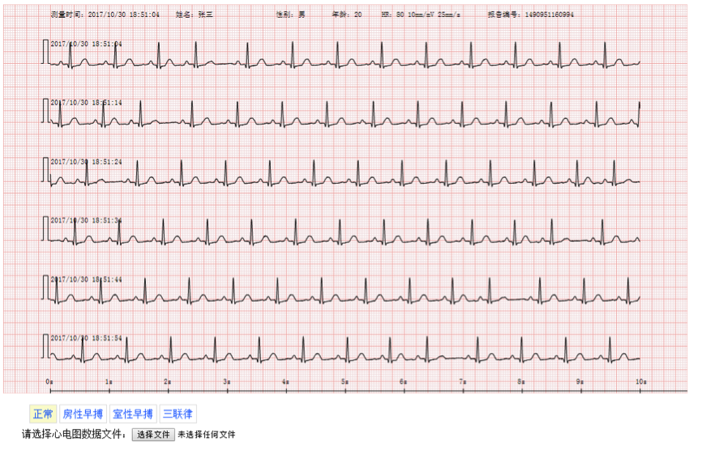

Web SDK概述
SDK概述
-
页面效果

SDK集成
请参考以下文档与教程，来集成 Web SDK。
Web SDK集成指南
SDK概述
-
实现方法
- SVG ：越来越多浏览器对于SVG的支持越来越好，减少服务器的运算压力，心电图的绘制在前端通过SVG技术的来实现。
-
功能代码集成
-
Html 引入SVG元素
<div id="ecgView"> <svg id="ecg" width="1027" height="500"></svg> </div> -
引入js文件
<script type="text/javascript" src="js/ecg.js"></script> -
初始化 Ecg.init(oEcg, parentDiv)
-
参数说明
-
oEcg：心电图svg元素的对象
oEcg = document.getElementById("ecg")； -
parentDiv：父类Div的ID值，便于调整父类Div的宽度和高度 出现多个就push多个div
var parentDiv = new Array(); parentDiv.push("ecgView");
-
-
-
绘制接口 Ecg.draw(headerData, ecgData, start_time, sample)
-
参数说明
-
headerData 心电图相关信息对象，里面包括了如下信息 例:
var headerData = { 'report_user': '姓名：张三', 'report_sex': '性别：男', 'report_age': '年龄：20', 'report_hr': 'HR：80 10mm/mV 25mm/s', 'report_start_time': '测量时间：2017/10/30 18:51:04', 'report_id': "报告编号：1490951160994" }; -
ecgData 心电电压值数组
2.1 直接赋值，来自自己的写ajax接口
例： var ecgData1 = [-29, -54, -54, -54, -54, -54, -54, -54, -36, -51, -51, -36, -32, -32, -32, -36, -40, -47, -58, -51, -54, -73, -73, -54, -69, -65, -65, -51, -51, -32, -3, 25, 54, 73, 73, 87, 87, 76, 62, 62, 32, 3, -21, -36, -51, -51, -51, -47, -32, -47, -47, -32, -32, -32, -32, -32, -36, -36, -40, -54, -117, -175, -179, -7, 241, 574, 834, 893, 772, 479, 168, -98, -186, -219, -175, -131, -135, -135, -120, -120, -120, -120, -117, -117, -113, -113, -109, -95, -95, -91, -91, -87, -87, -87, -87, -73, -73, -87, -87, -69, -69, -54, -40, -10, 18, 32, 62, 91, 106, 120, 135, 150, 164, 164, 179, 183, 186, 183, 194, 186, 175, 164, 150, 120, 87, 73, 43, 29, 14, -29, -47, -62, -76, -76, -76, , …];2.2 文件上传（生成ecg文件）
2.3 心电图文件前两行为报告编号和采样率
html： <div style="width:100%; height:30px; margin-top:10px; padding-left:30px; clear: both; display:block;"> 请选择心电图数据文件：<input type="file" onchange="upload(this)"/> </div> js：调用Ecg接口draw绘制心电图2.4 展示心电图
//start_time 心电图的记录时间 sample 心电图的采样率 function showEcgByData(data) { var ecgDataArray = data.split("\n"); sample = ecgDataArray[1]; headerData.report_id = "报告编号：" + ecgDataArray[0]; ecgDataArray.shift(); ecgDataArray.shift(); Ecg.init(oEcg, parentDiv); Ecg.draw(headerData, ecgDataArray, start_time, sample); }2.4 上传
function upload(input) { //支持chrome IE10 var data = null; if (window.FileReader) { var file = input.files[0]; filename = file.name.split(".")[0]; var reader = new FileReader(); reader.onload = function () { showEcgByData(this.result); //调用显示 } reader.readAsText(file); } else if (typeof window.ActiveXObject != 'undefined') { //支持IE 7 8 9 10 var xmlDoc; xmlDoc = new ActiveXObject("Microsoft.XMLDOM"); xmlDoc.async = false; xmlDoc.load(input.value); showEcgByData(xmlDoc.xml); } else if (document.implementation && document.implementation.createDocument) {//支持FF var xmlDoc; xmlDoc = document.implementation.createDocument("", "", null); xmlDoc.async = false; xmlDoc.load(input.value); showEcgByData(xmlDoc.xml); } else { alert("暂不支持此浏览器的数据获取") } }
-
-
-